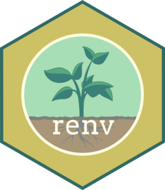

Download PDF

The renv package helps you create isolated, portable, and reproducible environments for your R projects. Use as little or as much of renv as you need – if all you want is project isolation, then init() is all you need. All of the “regular” tools for R package management and installation continue to work with renv. renv works with typical R package repositories (CRAN, Posit Package Manager, R-universe) and common Git services (GitHub, GitLab, Bitbucket).
An R library is a directory of installed R packages. When you install a package (e.g. via install.packages()), it goes into the first writable library on your .libPaths().
renv projects use an isolated project library. Installing or removing packages in one renv project does not affect other renv projects, or your default R library.
The lockfile (renv.lock) records the exact source and version of every package your project uses. snapshot() writes it; restore() reads it.
The global package cache is shared across all of your renv projects. Project libraries are populated with links into the cache, so creating a new project library is cheap, and installing a package you’ve used before is fast.
The core reproducibility loop ties every function together:
init() – set up an isolated project library.install() / update() – add and update packages as you work.snapshot() – record the exact package versions to the lockfile (renv.lock).restore() to reinstall those exact versions.Commit these files to version control so collaborators can reproduce your project:
renv.lock – the lockfile of exact package versions..Rprofile – activates renv for new R sessions in the project.renv/activate.R – the activation script.renv/settings.json – project-level settings.renv writes a .gitignore for you so the project library itself is not committed – you share the lockfile, not the installed packages. When a collaborator opens the project, renv automatically prompts them to run restore().
The same workflow powers CI: r-lib/actions/setup-renv restores your lockfile on GitHub Actions; see the CI vignette for other services.
Call init() on a new or existing project to initialize renv.
init() creates a project .Rprofile and renv/activate.R, which automatically activate renv for new R sessions started in the project.
Set project options at init time, e.g. to use explicit snapshots:
init(settings = list(snapshot.type = "explicit"))Use these to change which packages (and versions) are in your project library:
install(): Install one or more named packages. Supports custom remotes, e.g. install("tidyverse/dplyr") (GitHub) or a specific version with install("dplyr@1.1.0"). With no arguments, installs the packages your project requires.update(): Update packages (all by default, or those you name) to the latest version available from the source they were installed from.remove(): Remove packages from the project library.Enable pak for faster, parallel installs with options(renv.config.pak.enabled = TRUE).
Use these to save and reproduce the state of your project library:
status(): Check whether your lockfile and library are in sync (see Staying in Sync).snapshot(): Save the state of your project library to the lockfile.restore(): Install the exact package versions recorded in the lockfile.record(): Record a specific package version in the lockfile without installing it.status() reports when your project is out of sync, and how to fix it:
snapshot().restore().install(), then snapshot().renv.lock? Sync up with restore().When in doubt, treat the lockfile as the source of truth – your project library can always be rebuilt from it with restore().
dependencies(): Discover the packages used in your project’s R, R Markdown, and Quarto files. The rmarkdown package is required to scan dependencies in R Markdown and Quarto files.
Use a .renvignore file to exclude files or directories from dependency discovery, and settings$ignored.packages() to keep development-only packages (e.g. devtools) out of the lockfile.
renv supports several snapshot types, set with settings$snapshot.type(). The two most common:
| Type | What it captures |
|---|---|
"implicit" (default) |
Scans your files with dependencies() (e.g. library(dplyr), dplyr::mutate()). |
"explicit" |
Only packages listed in the project DESCRIPTION file, which you maintain. |
?config: User-specific settings. Tweak how renv behaves in different scenarios.?settings: Project-level settings. Persisted with the project and active for all collaborators.deactivate() / activate(): Temporarily turn renv off in a project, and turn it back on.history() / revert(): View past lockfiles from version control, and roll back to an earlier one.upgrade(): Upgrade the version of renv used by the project.repair(): Fix a project library whose links into the global cache have broken (e.g. after moving or cleaning the cache).purge(): Remove packages from the global cache (e.g. to reclaim space or clear a broken install).diagnostics(): Print a diagnostics report; useful for bug reports at github.com/rstudio/renv.renv reproduces R packages, not your whole environment. It does not manage:
restore() can also fail when a package must be compiled from source and its system prerequisites (or original binaries) are unavailable.
CC BY SA Posit Software, PBC • info@posit.co • posit.co
Learn more at rstudio.github.io/renv
Updated: 2026-08.
packageVersion("renv")[1] '1.2.3'